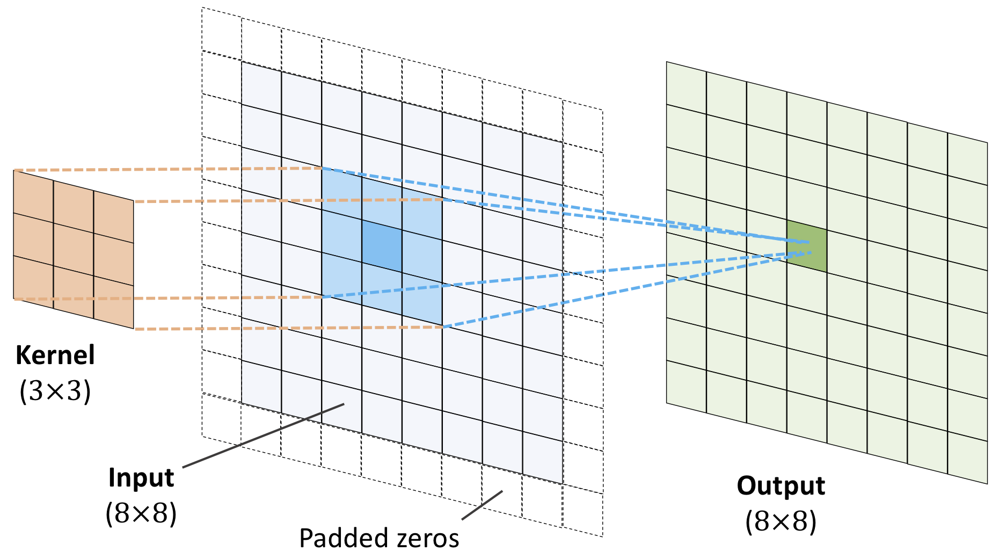

Week 44, Solving differential equations with neural networks and start Convolutional Neural Networks (CNN)#
Morten Hjorth-Jensen, Department of Physics, University of Oslo, Norway
Date: Week 44
Plan for week 44#
Material for the lecture Monday October 27, 2025.
Solving differential equations, continuation from last week, first lecture
Convolutional Neural Networks, second lecture
Readings and Videos:
These lecture notes at CompPhysics/MachineLearning
For a more in depth discussion on neural networks we recommend Goodfellow et al chapter 9. See also chapter 11 and 12 on practicalities and applications
Reading suggestions for implementation of CNNs see Rashcka et al.’s chapter 14 at rasbt/machine-learning-book.
Video on Deep Learning at https://www.youtube.com/playlist?list=PLZHQObOWTQDNU6R1_67000Dx_ZCJB-3pi
Video on Convolutional Neural Networks from MIT at https://www.youtube.com/watch?v=iaSUYvmCekI&ab_channel=AlexanderAmini
Video on CNNs from Stanford at https://www.youtube.com/watch?v=bNb2fEVKeEo&list=PLC1qU-LWwrF64f4QKQT-Vg5Wr4qEE1Zxk&index=6&ab_channel=StanfordUniversitySchoolofEngineering
Video of lecture October 27 at https://youtu.be/QqOGhLgkig0
Whiteboard notes at CompPhysics/MachineLearning
Lab sessions on Tuesday and Wednesday#
Main focus is discussion of and work on project 2
If you did not get time to finish the exercises from weeks 41-42, you can also keep working on them and hand in this coming Friday
Material for Lecture Monday October 27#
Solving differential equations with Deep Learning#
The Universal Approximation Theorem states that a neural network can approximate any function at a single hidden layer along with one input and output layer to any given precision.
Book on solving differential equations with ML methods.
An Introduction to Neural Network Methods for Differential Equations, by Yadav and Kumar.
Physics informed neural networks.
Scientific Machine Learning Through Physics–Informed Neural Networks: Where we are and What’s Next, by Cuomo et al
Thanks to Kristine Baluka Hein.
The lectures on differential equations were developed by Kristine Baluka Hein, now PhD student at IFI. A great thanks to Kristine.
Ordinary Differential Equations first#
An ordinary differential equation (ODE) is an equation involving functions having one variable.
In general, an ordinary differential equation looks like
where \(g(x)\) is the function to find, and \(g^{(n)}(x)\) is the \(n\)-th derivative of \(g(x)\).
The \(f\left(x, g(x), g'(x), g''(x), \, \dots \, , g^{(n)}(x)\right)\) is just a way to write that there is an expression involving \(x\) and \(g(x), \ g'(x), \ g''(x), \, \dots \, , \text{ and } g^{(n)}(x)\) on the left side of the equality sign in (1). The highest order of derivative, that is the value of \(n\), determines to the order of the equation. The equation is referred to as a \(n\)-th order ODE. Along with (1), some additional conditions of the function \(g(x)\) are typically given for the solution to be unique.
The trial solution#
Let the trial solution \(g_t(x)\) be
where \(h_1(x)\) is a function that makes \(g_t(x)\) satisfy a given set of conditions, \(N(x,P)\) a neural network with weights and biases described by \(P\) and \(h_2(x, N(x,P))\) some expression involving the neural network. The role of the function \(h_2(x, N(x,P))\), is to ensure that the output from \(N(x,P)\) is zero when \(g_t(x)\) is evaluated at the values of \(x\) where the given conditions must be satisfied. The function \(h_1(x)\) should alone make \(g_t(x)\) satisfy the conditions.
But what about the network \(N(x,P)\)?
As described previously, an optimization method could be used to minimize the parameters of a neural network, that being its weights and biases, through backward propagation.
Minimization process#
For the minimization to be defined, we need to have a cost function at hand to minimize.
It is given that \(f\left(x, \, g(x), \, g'(x), \, g''(x), \, \dots \, , \, g^{(n)}(x)\right)\) should be equal to zero in (1). We can choose to consider the mean squared error as the cost function for an input \(x\). Since we are looking at one input, the cost function is just \(f\) squared. The cost function \(c\left(x, P \right)\) can therefore be expressed as
If \(N\) inputs are given as a vector \(\boldsymbol{x}\) with elements \(x_i\) for \(i = 1,\dots,N\), the cost function becomes
The neural net should then find the parameters \(P\) that minimizes the cost function in (3) for a set of \(N\) training samples \(x_i\).
Minimizing the cost function using gradient descent and automatic differentiation#
To perform the minimization using gradient descent, the gradient of \(C\left(\boldsymbol{x}, P\right)\) is needed. It might happen so that finding an analytical expression of the gradient of \(C(\boldsymbol{x}, P)\) from (3) gets too messy, depending on which cost function one desires to use.
Luckily, there exists libraries that makes the job for us through automatic differentiation. Automatic differentiation is a method of finding the derivatives numerically with very high precision.
Example: Exponential decay#
An exponential decay of a quantity \(g(x)\) is described by the equation
with \(g(0) = g_0\) for some chosen initial value \(g_0\).
The analytical solution of (4) is
Having an analytical solution at hand, it is possible to use it to compare how well a neural network finds a solution of (4).
The function to solve for#
The program will use a neural network to solve
where \(g(0) = g_0\) with \(\gamma\) and \(g_0\) being some chosen values.
In this example, \(\gamma = 2\) and \(g_0 = 10\).
The trial solution#
To begin with, a trial solution \(g_t(t)\) must be chosen. A general trial solution for ordinary differential equations could be
with \(h_1(x)\) ensuring that \(g_t(x)\) satisfies some conditions and \(h_2(x,N(x, P))\) an expression involving \(x\) and the output from the neural network \(N(x,P)\) with \(P \) being the collection of the weights and biases for each layer. For now, it is assumed that the network consists of one input layer, one hidden layer, and one output layer.
Setup of Network#
In this network, there are no weights and bias at the input layer, so \(P = \{ P_{\text{hidden}}, P_{\text{output}} \}\). If there are \(N_{\text{hidden} }\) neurons in the hidden layer, then \(P_{\text{hidden}}\) is a \(N_{\text{hidden} } \times (1 + N_{\text{input}})\) matrix, given that there are \(N_{\text{input}}\) neurons in the input layer.
The first column in \(P_{\text{hidden} }\) represents the bias for each neuron in the hidden layer and the second column represents the weights for each neuron in the hidden layer from the input layer. If there are \(N_{\text{output} }\) neurons in the output layer, then \(P_{\text{output}} \) is a \(N_{\text{output} } \times (1 + N_{\text{hidden} })\) matrix.
Its first column represents the bias of each neuron and the remaining columns represents the weights to each neuron.
It is given that \(g(0) = g_0\). The trial solution must fulfill this condition to be a proper solution of (6). A possible way to ensure that \(g_t(0, P) = g_0\), is to let \(F(N(x,P)) = x \cdot N(x,P)\) and \(h_1(x) = g_0\). This gives the following trial solution:
Reformulating the problem#
We wish that our neural network manages to minimize a given cost function.
A reformulation of out equation, (6), must therefore be done, such that it describes the problem a neural network can solve for.
The neural network must find the set of weights and biases \(P\) such that the trial solution in (7) satisfies (6).
The trial solution
has been chosen such that it already solves the condition \(g(0) = g_0\). What remains, is to find \(P\) such that
is fulfilled as best as possible.
More technicalities#
The left hand side and right hand side of (8) must be computed separately, and then the neural network must choose weights and biases, contained in \(P\), such that the sides are equal as best as possible. This means that the absolute or squared difference between the sides must be as close to zero, ideally equal to zero. In this case, the difference squared shows to be an appropriate measurement of how erroneous the trial solution is with respect to \(P\) of the neural network.
This gives the following cost function our neural network must solve for:
(the notation \(\min_{P}\{ f(x, P) \}\) means that we desire to find \(P\) that yields the minimum of \(f(x, P)\))
or, in terms of weights and biases for the hidden and output layer in our network:
for an input value \(x\).
More details#
If the neural network evaluates \(g_t(x, P)\) at more values for \(x\), say \(N\) values \(x_i\) for \(i = 1, \dots, N\), then the total error to minimize becomes
Letting \(\boldsymbol{x}\) be a vector with elements \(x_i\) and \(C(\boldsymbol{x}, P) = \frac{1}{N} \sum_i \big(g_t'(x_i, P) - ( -\gamma g_t(x_i, P) \big)^2\) denote the cost function, the minimization problem that our network must solve, becomes
In terms of \(P_{\text{hidden} }\) and \(P_{\text{output} }\), this could also be expressed as
A possible implementation of a neural network#
For simplicity, it is assumed that the input is an array \(\boldsymbol{x} = (x_1, \dots, x_N)\) with \(N\) elements. It is at these points the neural network should find \(P\) such that it fulfills (9).
First, the neural network must feed forward the inputs. This means that \(\boldsymbol{x}s\) must be passed through an input layer, a hidden layer and a output layer. The input layer in this case, does not need to process the data any further. The input layer will consist of \(N_{\text{input} }\) neurons, passing its element to each neuron in the hidden layer. The number of neurons in the hidden layer will be \(N_{\text{hidden} }\).
Technicalities#
For the \(i\)-th in the hidden layer with weight \(w_i^{\text{hidden} }\) and bias \(b_i^{\text{hidden} }\), the weighting from the \(j\)-th neuron at the input layer is:
Final technicalities I#
The result after weighting the inputs at the \(i\)-th hidden neuron can be written as a vector:
Final technicalities II#
The vector \(\boldsymbol{p}_{i, \text{hidden}}^T\) constitutes each row in \(P_{\text{hidden} }\), which contains the weights for the neural network to minimize according to (9).
After having found \(\boldsymbol{z}_{i}^{\text{hidden}} \) for every \(i\)-th neuron within the hidden layer, the vector will be sent to an activation function \(a_i(\boldsymbol{z})\).
In this example, the sigmoid function has been chosen to be the activation function for each hidden neuron:
It is possible to use other activations functions for the hidden layer also.
The output \(\boldsymbol{x}_i^{\text{hidden}}\) from each \(i\)-th hidden neuron is:
The outputs \(\boldsymbol{x}_i^{\text{hidden} } \) are then sent to the output layer.
The output layer consists of one neuron in this case, and combines the output from each of the neurons in the hidden layers. The output layer combines the results from the hidden layer using some weights \(w_i^{\text{output}}\) and biases \(b_i^{\text{output}}\). In this case, it is assumes that the number of neurons in the output layer is one.
Final technicalities III#
The procedure of weighting the output neuron \(j\) in the hidden layer to the \(i\)-th neuron in the output layer is similar as for the hidden layer described previously.
Final technicalities IV#
Expressing \(z_{1,j}^{\text{output}}\) as a vector gives the following way of weighting the inputs from the hidden layer:
In this case we seek a continuous range of values since we are approximating a function. This means that after computing \(\boldsymbol{z}_{1}^{\text{output}}\) the neural network has finished its feed forward step, and \(\boldsymbol{z}_{1}^{\text{output}}\) is the final output of the network.
Back propagation#
The next step is to decide how the parameters should be changed such that they minimize the cost function.
The chosen cost function for this problem is
In order to minimize the cost function, an optimization method must be chosen.
Here, gradient descent with a constant step size has been chosen.
Gradient descent#
The idea of the gradient descent algorithm is to update parameters in a direction where the cost function decreases goes to a minimum.
In general, the update of some parameters \(\boldsymbol{\omega}\) given a cost function defined by some weights \(\boldsymbol{\omega}\), \(C(\boldsymbol{x}, \boldsymbol{\omega})\), goes as follows:
for a number of iterations or until \( \big|\big| \boldsymbol{\omega}_{\text{new} } - \boldsymbol{\omega} \big|\big|\) becomes smaller than some given tolerance.
The value of \(\lambda\) decides how large steps the algorithm must take in the direction of \( \nabla_{\boldsymbol{\omega}} C(\boldsymbol{x}, \boldsymbol{\omega})\). The notation \(\nabla_{\boldsymbol{\omega}}\) express the gradient with respect to the elements in \(\boldsymbol{\omega}\).
In our case, we have to minimize the cost function \(C(\boldsymbol{x}, P)\) with respect to the two sets of weights and biases, that is for the hidden layer \(P_{\text{hidden} }\) and for the output layer \(P_{\text{output} }\) .
This means that \(P_{\text{hidden} }\) and \(P_{\text{output} }\) is updated by
The code for solving the ODE#
%matplotlib inline
import autograd.numpy as np
from autograd import grad, elementwise_grad
import autograd.numpy.random as npr
from matplotlib import pyplot as plt
def sigmoid(z):
return 1/(1 + np.exp(-z))
# Assuming one input, hidden, and output layer
def neural_network(params, x):
# Find the weights (including and biases) for the hidden and output layer.
# Assume that params is a list of parameters for each layer.
# The biases are the first element for each array in params,
# and the weights are the remaning elements in each array in params.
w_hidden = params[0]
w_output = params[1]
# Assumes input x being an one-dimensional array
num_values = np.size(x)
x = x.reshape(-1, num_values)
# Assume that the input layer does nothing to the input x
x_input = x
## Hidden layer:
# Add a row of ones to include bias
x_input = np.concatenate((np.ones((1,num_values)), x_input ), axis = 0)
z_hidden = np.matmul(w_hidden, x_input)
x_hidden = sigmoid(z_hidden)
## Output layer:
# Include bias:
x_hidden = np.concatenate((np.ones((1,num_values)), x_hidden ), axis = 0)
z_output = np.matmul(w_output, x_hidden)
x_output = z_output
return x_output
# The trial solution using the deep neural network:
def g_trial(x,params, g0 = 10):
return g0 + x*neural_network(params,x)
# The right side of the ODE:
def g(x, g_trial, gamma = 2):
return -gamma*g_trial
# The cost function:
def cost_function(P, x):
# Evaluate the trial function with the current parameters P
g_t = g_trial(x,P)
# Find the derivative w.r.t x of the neural network
d_net_out = elementwise_grad(neural_network,1)(P,x)
# Find the derivative w.r.t x of the trial function
d_g_t = elementwise_grad(g_trial,0)(x,P)
# The right side of the ODE
func = g(x, g_t)
err_sqr = (d_g_t - func)**2
cost_sum = np.sum(err_sqr)
return cost_sum / np.size(err_sqr)
# Solve the exponential decay ODE using neural network with one input, hidden, and output layer
def solve_ode_neural_network(x, num_neurons_hidden, num_iter, lmb):
## Set up initial weights and biases
# For the hidden layer
p0 = npr.randn(num_neurons_hidden, 2 )
# For the output layer
p1 = npr.randn(1, num_neurons_hidden + 1 ) # +1 since bias is included
P = [p0, p1]
print('Initial cost: %g'%cost_function(P, x))
## Start finding the optimal weights using gradient descent
# Find the Python function that represents the gradient of the cost function
# w.r.t the 0-th input argument -- that is the weights and biases in the hidden and output layer
cost_function_grad = grad(cost_function,0)
# Let the update be done num_iter times
for i in range(num_iter):
# Evaluate the gradient at the current weights and biases in P.
# The cost_grad consist now of two arrays;
# one for the gradient w.r.t P_hidden and
# one for the gradient w.r.t P_output
cost_grad = cost_function_grad(P, x)
P[0] = P[0] - lmb * cost_grad[0]
P[1] = P[1] - lmb * cost_grad[1]
print('Final cost: %g'%cost_function(P, x))
return P
def g_analytic(x, gamma = 2, g0 = 10):
return g0*np.exp(-gamma*x)
# Solve the given problem
if __name__ == '__main__':
# Set seed such that the weight are initialized
# with same weights and biases for every run.
npr.seed(15)
## Decide the vales of arguments to the function to solve
N = 10
x = np.linspace(0, 1, N)
## Set up the initial parameters
num_hidden_neurons = 10
num_iter = 10000
lmb = 0.001
# Use the network
P = solve_ode_neural_network(x, num_hidden_neurons, num_iter, lmb)
# Print the deviation from the trial solution and true solution
res = g_trial(x,P)
res_analytical = g_analytic(x)
print('Max absolute difference: %g'%np.max(np.abs(res - res_analytical)))
# Plot the results
plt.figure(figsize=(10,10))
plt.title('Performance of neural network solving an ODE compared to the analytical solution')
plt.plot(x, res_analytical)
plt.plot(x, res[0,:])
plt.legend(['analytical','nn'])
plt.xlabel('x')
plt.ylabel('g(x)')
plt.show()
Example: Population growth#
A logistic model of population growth assumes that a population converges toward an equilibrium. The population growth can be modeled by
where \(g(t)\) is the population density at time \(t\), \(\alpha > 0\) the growth rate and \(A > 0\) is the maximum population number in the environment. Also, at \(t = 0\) the population has the size \(g(0) = g_0\), where \(g_0\) is some chosen constant.
In this example, similar network as for the exponential decay using Autograd has been used to solve the equation. However, as the implementation might suffer from e.g numerical instability and high execution time (this might be more apparent in the examples solving PDEs), using a library like TensorFlow is recommended. Here, we stay with a more simple approach and implement for comparison, the simple forward Euler method.
Setting up the problem#
Here, we will model a population \(g(t)\) in an environment having carrying capacity \(A\). The population follows the model
where \(g(0) = g_0\).
In this example, we let \(\alpha = 2\), \(A = 1\), and \(g_0 = 1.2\).
The trial solution#
We will get a slightly different trial solution, as the boundary conditions are different compared to the case for exponential decay.
A possible trial solution satisfying the condition \(g(0) = g_0\) could be
with \(N(t,P)\) being the output from the neural network with weights and biases for each layer collected in the set \(P\).
The analytical solution is
The program using Autograd#
The network will be the similar as for the exponential decay example, but with some small modifications for our problem.
import autograd.numpy as np
from autograd import grad, elementwise_grad
import autograd.numpy.random as npr
from matplotlib import pyplot as plt
def sigmoid(z):
return 1/(1 + np.exp(-z))
# Function to get the parameters.
# Done such that one can easily change the paramaters after one's liking.
def get_parameters():
alpha = 2
A = 1
g0 = 1.2
return alpha, A, g0
def deep_neural_network(deep_params, x):
# N_hidden is the number of hidden layers
# deep_params is a list, len() should be used
N_hidden = len(deep_params) - 1 # -1 since params consists of
# parameters to all the hidden
# layers AND the output layer.
# Assumes input x being an one-dimensional array
num_values = np.size(x)
x = x.reshape(-1, num_values)
# Assume that the input layer does nothing to the input x
x_input = x
# Due to multiple hidden layers, define a variable referencing to the
# output of the previous layer:
x_prev = x_input
## Hidden layers:
for l in range(N_hidden):
# From the list of parameters P; find the correct weigths and bias for this layer
w_hidden = deep_params[l]
# Add a row of ones to include bias
x_prev = np.concatenate((np.ones((1,num_values)), x_prev ), axis = 0)
z_hidden = np.matmul(w_hidden, x_prev)
x_hidden = sigmoid(z_hidden)
# Update x_prev such that next layer can use the output from this layer
x_prev = x_hidden
## Output layer:
# Get the weights and bias for this layer
w_output = deep_params[-1]
# Include bias:
x_prev = np.concatenate((np.ones((1,num_values)), x_prev), axis = 0)
z_output = np.matmul(w_output, x_prev)
x_output = z_output
return x_output
def cost_function_deep(P, x):
# Evaluate the trial function with the current parameters P
g_t = g_trial_deep(x,P)
# Find the derivative w.r.t x of the trial function
d_g_t = elementwise_grad(g_trial_deep,0)(x,P)
# The right side of the ODE
func = f(x, g_t)
err_sqr = (d_g_t - func)**2
cost_sum = np.sum(err_sqr)
return cost_sum / np.size(err_sqr)
# The right side of the ODE:
def f(x, g_trial):
alpha,A, g0 = get_parameters()
return alpha*g_trial*(A - g_trial)
# The trial solution using the deep neural network:
def g_trial_deep(x, params):
alpha,A, g0 = get_parameters()
return g0 + x*deep_neural_network(params,x)
# The analytical solution:
def g_analytic(t):
alpha,A, g0 = get_parameters()
return A*g0/(g0 + (A - g0)*np.exp(-alpha*A*t))
def solve_ode_deep_neural_network(x, num_neurons, num_iter, lmb):
# num_hidden_neurons is now a list of number of neurons within each hidden layer
# Find the number of hidden layers:
N_hidden = np.size(num_neurons)
## Set up initial weigths and biases
# Initialize the list of parameters:
P = [None]*(N_hidden + 1) # + 1 to include the output layer
P[0] = npr.randn(num_neurons[0], 2 )
for l in range(1,N_hidden):
P[l] = npr.randn(num_neurons[l], num_neurons[l-1] + 1) # +1 to include bias
# For the output layer
P[-1] = npr.randn(1, num_neurons[-1] + 1 ) # +1 since bias is included
print('Initial cost: %g'%cost_function_deep(P, x))
## Start finding the optimal weigths using gradient descent
# Find the Python function that represents the gradient of the cost function
# w.r.t the 0-th input argument -- that is the weights and biases in the hidden and output layer
cost_function_deep_grad = grad(cost_function_deep,0)
# Let the update be done num_iter times
for i in range(num_iter):
# Evaluate the gradient at the current weights and biases in P.
# The cost_grad consist now of N_hidden + 1 arrays; the gradient w.r.t the weights and biases
# in the hidden layers and output layers evaluated at x.
cost_deep_grad = cost_function_deep_grad(P, x)
for l in range(N_hidden+1):
P[l] = P[l] - lmb * cost_deep_grad[l]
print('Final cost: %g'%cost_function_deep(P, x))
return P
if __name__ == '__main__':
npr.seed(4155)
## Decide the vales of arguments to the function to solve
Nt = 10
T = 1
t = np.linspace(0,T, Nt)
## Set up the initial parameters
num_hidden_neurons = [100, 50, 25]
num_iter = 1000
lmb = 1e-3
P = solve_ode_deep_neural_network(t, num_hidden_neurons, num_iter, lmb)
g_dnn_ag = g_trial_deep(t,P)
g_analytical = g_analytic(t)
# Find the maximum absolute difference between the solutons:
diff_ag = np.max(np.abs(g_dnn_ag - g_analytical))
print("The max absolute difference between the solutions is: %g"%diff_ag)
plt.figure(figsize=(10,10))
plt.title('Performance of neural network solving an ODE compared to the analytical solution')
plt.plot(t, g_analytical)
plt.plot(t, g_dnn_ag[0,:])
plt.legend(['analytical','nn'])
plt.xlabel('t')
plt.ylabel('g(t)')
plt.show()
Using forward Euler to solve the ODE#
A straightforward way of solving an ODE numerically, is to use Euler’s method.
Euler’s method uses Taylor series to approximate the value at a function \(f\) at a step \(\Delta x\) from \(x\):
In our case, using Euler’s method to approximate the value of \(g\) at a step \(\Delta t\) from \(t\) yields
along with the condition that \(g(0) = g_0\).
Let \(t_i = i \cdot \Delta t\) where \(\Delta t = \frac{T}{N_t-1}\) where \(T\) is the final time our solver must solve for and \(N_t\) the number of values for \(t \in [0, T]\) for \(i = 0, \dots, N_t-1\).
For \(i \geq 1\), we have that
Now, if \(g_i = g(t_i)\) then
for \(i \geq 1\) and \(g_0 = g(t_0) = g(0) = g_0\).
Equation (12) could be implemented in the following way, extending the program that uses the network using Autograd:
# Assume that all function definitions from the example program using Autograd
# are located here.
if __name__ == '__main__':
npr.seed(4155)
## Decide the vales of arguments to the function to solve
Nt = 10
T = 1
t = np.linspace(0,T, Nt)
## Set up the initial parameters
num_hidden_neurons = [100,50,25]
num_iter = 1000
lmb = 1e-3
P = solve_ode_deep_neural_network(t, num_hidden_neurons, num_iter, lmb)
g_dnn_ag = g_trial_deep(t,P)
g_analytical = g_analytic(t)
# Find the maximum absolute difference between the solutons:
diff_ag = np.max(np.abs(g_dnn_ag - g_analytical))
print("The max absolute difference between the solutions is: %g"%diff_ag)
plt.figure(figsize=(10,10))
plt.title('Performance of neural network solving an ODE compared to the analytical solution')
plt.plot(t, g_analytical)
plt.plot(t, g_dnn_ag[0,:])
plt.legend(['analytical','nn'])
plt.xlabel('t')
plt.ylabel('g(t)')
## Find an approximation to the funtion using forward Euler
alpha, A, g0 = get_parameters()
dt = T/(Nt - 1)
# Perform forward Euler to solve the ODE
g_euler = np.zeros(Nt)
g_euler[0] = g0
for i in range(1,Nt):
g_euler[i] = g_euler[i-1] + dt*(alpha*g_euler[i-1]*(A - g_euler[i-1]))
# Print the errors done by each method
diff1 = np.max(np.abs(g_euler - g_analytical))
diff2 = np.max(np.abs(g_dnn_ag[0,:] - g_analytical))
print('Max absolute difference between Euler method and analytical: %g'%diff1)
print('Max absolute difference between deep neural network and analytical: %g'%diff2)
# Plot results
plt.figure(figsize=(10,10))
plt.plot(t,g_euler)
plt.plot(t,g_analytical)
plt.plot(t,g_dnn_ag[0,:])
plt.legend(['euler','analytical','dnn'])
plt.xlabel('Time t')
plt.ylabel('g(t)')
plt.show()
Example: Solving the one dimensional Poisson equation#
The Poisson equation for \(g(x)\) in one dimension is
where \(f(x)\) is a given function for \(x \in (0,1)\).
The conditions that \(g(x)\) is chosen to fulfill, are
This equation can be solved numerically using programs where e.g Autograd and TensorFlow are used. The results from the networks can then be compared to the analytical solution. In addition, it could be interesting to see how a typical method for numerically solving second order ODEs compares to the neural networks.
The specific equation to solve for#
Here, the function \(g(x)\) to solve for follows the equation
where \(f(x)\) is a given function, along with the chosen conditions
In this example, we consider the case when \(f(x) = (3x + x^2)\exp(x)\).
For this case, a possible trial solution satisfying the conditions could be
The analytical solution for this problem is
Solving the equation using Autograd#
import autograd.numpy as np
from autograd import grad, elementwise_grad
import autograd.numpy.random as npr
from matplotlib import pyplot as plt
def sigmoid(z):
return 1/(1 + np.exp(-z))
def deep_neural_network(deep_params, x):
# N_hidden is the number of hidden layers
# deep_params is a list, len() should be used
N_hidden = len(deep_params) - 1 # -1 since params consists of
# parameters to all the hidden
# layers AND the output layer.
# Assumes input x being an one-dimensional array
num_values = np.size(x)
x = x.reshape(-1, num_values)
# Assume that the input layer does nothing to the input x
x_input = x
# Due to multiple hidden layers, define a variable referencing to the
# output of the previous layer:
x_prev = x_input
## Hidden layers:
for l in range(N_hidden):
# From the list of parameters P; find the correct weigths and bias for this layer
w_hidden = deep_params[l]
# Add a row of ones to include bias
x_prev = np.concatenate((np.ones((1,num_values)), x_prev ), axis = 0)
z_hidden = np.matmul(w_hidden, x_prev)
x_hidden = sigmoid(z_hidden)
# Update x_prev such that next layer can use the output from this layer
x_prev = x_hidden
## Output layer:
# Get the weights and bias for this layer
w_output = deep_params[-1]
# Include bias:
x_prev = np.concatenate((np.ones((1,num_values)), x_prev), axis = 0)
z_output = np.matmul(w_output, x_prev)
x_output = z_output
return x_output
def solve_ode_deep_neural_network(x, num_neurons, num_iter, lmb):
# num_hidden_neurons is now a list of number of neurons within each hidden layer
# Find the number of hidden layers:
N_hidden = np.size(num_neurons)
## Set up initial weigths and biases
# Initialize the list of parameters:
P = [None]*(N_hidden + 1) # + 1 to include the output layer
P[0] = npr.randn(num_neurons[0], 2 )
for l in range(1,N_hidden):
P[l] = npr.randn(num_neurons[l], num_neurons[l-1] + 1) # +1 to include bias
# For the output layer
P[-1] = npr.randn(1, num_neurons[-1] + 1 ) # +1 since bias is included
print('Initial cost: %g'%cost_function_deep(P, x))
## Start finding the optimal weigths using gradient descent
# Find the Python function that represents the gradient of the cost function
# w.r.t the 0-th input argument -- that is the weights and biases in the hidden and output layer
cost_function_deep_grad = grad(cost_function_deep,0)
# Let the update be done num_iter times
for i in range(num_iter):
# Evaluate the gradient at the current weights and biases in P.
# The cost_grad consist now of N_hidden + 1 arrays; the gradient w.r.t the weights and biases
# in the hidden layers and output layers evaluated at x.
cost_deep_grad = cost_function_deep_grad(P, x)
for l in range(N_hidden+1):
P[l] = P[l] - lmb * cost_deep_grad[l]
print('Final cost: %g'%cost_function_deep(P, x))
return P
## Set up the cost function specified for this Poisson equation:
# The right side of the ODE
def f(x):
return (3*x + x**2)*np.exp(x)
def cost_function_deep(P, x):
# Evaluate the trial function with the current parameters P
g_t = g_trial_deep(x,P)
# Find the derivative w.r.t x of the trial function
d2_g_t = elementwise_grad(elementwise_grad(g_trial_deep,0))(x,P)
right_side = f(x)
err_sqr = (-d2_g_t - right_side)**2
cost_sum = np.sum(err_sqr)
return cost_sum/np.size(err_sqr)
# The trial solution:
def g_trial_deep(x,P):
return x*(1-x)*deep_neural_network(P,x)
# The analytic solution;
def g_analytic(x):
return x*(1-x)*np.exp(x)
if __name__ == '__main__':
npr.seed(4155)
## Decide the vales of arguments to the function to solve
Nx = 10
x = np.linspace(0,1, Nx)
## Set up the initial parameters
num_hidden_neurons = [200,100]
num_iter = 1000
lmb = 1e-3
P = solve_ode_deep_neural_network(x, num_hidden_neurons, num_iter, lmb)
g_dnn_ag = g_trial_deep(x,P)
g_analytical = g_analytic(x)
# Find the maximum absolute difference between the solutons:
max_diff = np.max(np.abs(g_dnn_ag - g_analytical))
print("The max absolute difference between the solutions is: %g"%max_diff)
plt.figure(figsize=(10,10))
plt.title('Performance of neural network solving an ODE compared to the analytical solution')
plt.plot(x, g_analytical)
plt.plot(x, g_dnn_ag[0,:])
plt.legend(['analytical','nn'])
plt.xlabel('x')
plt.ylabel('g(x)')
plt.show()
Comparing with a numerical scheme#
The Poisson equation is possible to solve using Taylor series to approximate the second derivative.
Using Taylor series, the second derivative can be expressed as
where \(\Delta x\) is a small step size and \(E_{\Delta x}(x)\) being the error term.
Looking away from the error terms gives an approximation to the second derivative:
If \(x_i = i \Delta x = x_{i-1} + \Delta x\) and \(g_i = g(x_i)\) for \(i = 1,\dots N_x - 2\) with \(N_x\) being the number of values for \(x\), (15) becomes
Since we know from our problem that
along with the conditions \(g(0) = g(1) = 0\), the following scheme can be used to find an approximate solution for \(g(x)\) numerically:
for \(i = 1, \dots, N_x - 2\) where \(g_0 = g_{N_x - 1} = 0\) and \(f(x_i) = (3x_i + x_i^2)\exp(x_i)\), which is given for our specific problem.
The equation can be rewritten into a matrix equation:
which makes it possible to solve for the vector \(\boldsymbol{g}\).
Setting up the code#
We can then compare the result from this numerical scheme with the output from our network using Autograd:
import autograd.numpy as np
from autograd import grad, elementwise_grad
import autograd.numpy.random as npr
from matplotlib import pyplot as plt
def sigmoid(z):
return 1/(1 + np.exp(-z))
def deep_neural_network(deep_params, x):
# N_hidden is the number of hidden layers
# deep_params is a list, len() should be used
N_hidden = len(deep_params) - 1 # -1 since params consists of
# parameters to all the hidden
# layers AND the output layer.
# Assumes input x being an one-dimensional array
num_values = np.size(x)
x = x.reshape(-1, num_values)
# Assume that the input layer does nothing to the input x
x_input = x
# Due to multiple hidden layers, define a variable referencing to the
# output of the previous layer:
x_prev = x_input
## Hidden layers:
for l in range(N_hidden):
# From the list of parameters P; find the correct weigths and bias for this layer
w_hidden = deep_params[l]
# Add a row of ones to include bias
x_prev = np.concatenate((np.ones((1,num_values)), x_prev ), axis = 0)
z_hidden = np.matmul(w_hidden, x_prev)
x_hidden = sigmoid(z_hidden)
# Update x_prev such that next layer can use the output from this layer
x_prev = x_hidden
## Output layer:
# Get the weights and bias for this layer
w_output = deep_params[-1]
# Include bias:
x_prev = np.concatenate((np.ones((1,num_values)), x_prev), axis = 0)
z_output = np.matmul(w_output, x_prev)
x_output = z_output
return x_output
def solve_ode_deep_neural_network(x, num_neurons, num_iter, lmb):
# num_hidden_neurons is now a list of number of neurons within each hidden layer
# Find the number of hidden layers:
N_hidden = np.size(num_neurons)
## Set up initial weigths and biases
# Initialize the list of parameters:
P = [None]*(N_hidden + 1) # + 1 to include the output layer
P[0] = npr.randn(num_neurons[0], 2 )
for l in range(1,N_hidden):
P[l] = npr.randn(num_neurons[l], num_neurons[l-1] + 1) # +1 to include bias
# For the output layer
P[-1] = npr.randn(1, num_neurons[-1] + 1 ) # +1 since bias is included
print('Initial cost: %g'%cost_function_deep(P, x))
## Start finding the optimal weigths using gradient descent
# Find the Python function that represents the gradient of the cost function
# w.r.t the 0-th input argument -- that is the weights and biases in the hidden and output layer
cost_function_deep_grad = grad(cost_function_deep,0)
# Let the update be done num_iter times
for i in range(num_iter):
# Evaluate the gradient at the current weights and biases in P.
# The cost_grad consist now of N_hidden + 1 arrays; the gradient w.r.t the weights and biases
# in the hidden layers and output layers evaluated at x.
cost_deep_grad = cost_function_deep_grad(P, x)
for l in range(N_hidden+1):
P[l] = P[l] - lmb * cost_deep_grad[l]
print('Final cost: %g'%cost_function_deep(P, x))
return P
## Set up the cost function specified for this Poisson equation:
# The right side of the ODE
def f(x):
return (3*x + x**2)*np.exp(x)
def cost_function_deep(P, x):
# Evaluate the trial function with the current parameters P
g_t = g_trial_deep(x,P)
# Find the derivative w.r.t x of the trial function
d2_g_t = elementwise_grad(elementwise_grad(g_trial_deep,0))(x,P)
right_side = f(x)
err_sqr = (-d2_g_t - right_side)**2
cost_sum = np.sum(err_sqr)
return cost_sum/np.size(err_sqr)
# The trial solution:
def g_trial_deep(x,P):
return x*(1-x)*deep_neural_network(P,x)
# The analytic solution;
def g_analytic(x):
return x*(1-x)*np.exp(x)
if __name__ == '__main__':
npr.seed(4155)
## Decide the vales of arguments to the function to solve
Nx = 10
x = np.linspace(0,1, Nx)
## Set up the initial parameters
num_hidden_neurons = [200,100]
num_iter = 1000
lmb = 1e-3
P = solve_ode_deep_neural_network(x, num_hidden_neurons, num_iter, lmb)
g_dnn_ag = g_trial_deep(x,P)
g_analytical = g_analytic(x)
# Find the maximum absolute difference between the solutons:
plt.figure(figsize=(10,10))
plt.title('Performance of neural network solving an ODE compared to the analytical solution')
plt.plot(x, g_analytical)
plt.plot(x, g_dnn_ag[0,:])
plt.legend(['analytical','nn'])
plt.xlabel('x')
plt.ylabel('g(x)')
## Perform the computation using the numerical scheme
dx = 1/(Nx - 1)
# Set up the matrix A
A = np.zeros((Nx-2,Nx-2))
A[0,0] = 2
A[0,1] = -1
for i in range(1,Nx-3):
A[i,i-1] = -1
A[i,i] = 2
A[i,i+1] = -1
A[Nx - 3, Nx - 4] = -1
A[Nx - 3, Nx - 3] = 2
# Set up the vector f
f_vec = dx**2 * f(x[1:-1])
# Solve the equation
g_res = np.linalg.solve(A,f_vec)
g_vec = np.zeros(Nx)
g_vec[1:-1] = g_res
# Print the differences between each method
max_diff1 = np.max(np.abs(g_dnn_ag - g_analytical))
max_diff2 = np.max(np.abs(g_vec - g_analytical))
print("The max absolute difference between the analytical solution and DNN Autograd: %g"%max_diff1)
print("The max absolute difference between the analytical solution and numerical scheme: %g"%max_diff2)
# Plot the results
plt.figure(figsize=(10,10))
plt.plot(x,g_vec)
plt.plot(x,g_analytical)
plt.plot(x,g_dnn_ag[0,:])
plt.legend(['numerical scheme','analytical','dnn'])
plt.show()
Partial Differential Equations#
A partial differential equation (PDE) has a solution here the function is defined by multiple variables. The equation may involve all kinds of combinations of which variables the function is differentiated with respect to.
In general, a partial differential equation for a function \(g(x_1,\dots,x_N)\) with \(N\) variables may be expressed as
where \(f\) is an expression involving all kinds of possible mixed derivatives of \(g(x_1,\dots,x_N)\) up to an order \(n\). In order for the solution to be unique, some additional conditions must also be given.
Type of problem#
The problem our network must solve for, is similar to the ODE case. We must have a trial solution \(g_t\) at hand.
For instance, the trial solution could be expressed as
where \(h_1(x_1,\dots,x_N)\) is a function that ensures \(g_t(x_1,\dots,x_N)\) satisfies some given conditions. The neural network \(N(x_1,\dots,x_N,P)\) has weights and biases described by \(P\) and \(h_2(x_1,\dots,x_N,N(x_1,\dots,x_N,P))\) is an expression using the output from the neural network in some way.
The role of the function \(h_2(x_1,\dots,x_N,N(x_1,\dots,x_N,P))\), is to ensure that the output of \(N(x_1,\dots,x_N,P)\) is zero when \(g_t(x_1,\dots,x_N)\) is evaluated at the values of \(x_1,\dots,x_N\) where the given conditions must be satisfied. The function \(h_1(x_1,\dots,x_N)\) should alone make \(g_t(x_1,\dots,x_N)\) satisfy the conditions.
Network requirements#
The network tries then the minimize the cost function following the same ideas as described for the ODE case, but now with more than one variables to consider. The concept still remains the same; find a set of parameters \(P\) such that the expression \(f\) in (17) is as close to zero as possible.
As for the ODE case, the cost function is the mean squared error that the network must try to minimize. The cost function for the network to minimize is
More details#
If we let \(\boldsymbol{x} = \big( x_1, \dots, x_N \big)\) be an array containing the values for \(x_1, \dots, x_N\) respectively, the cost function can be reformulated into the following:
If we also have \(M\) different sets of values for \(x_1, \dots, x_N\), that is \(\boldsymbol{x}_i = \big(x_1^{(i)}, \dots, x_N^{(i)}\big)\) for \(i = 1,\dots,M\) being the rows in matrix \(X\), the cost function can be generalized into
Example: The diffusion equation#
In one spatial dimension, the equation reads
where a possible choice of conditions are
with \(u(x)\) being some given function.
Defining the problem#
For this case, we want to find \(g(x,t)\) such that
and
with \(u(x) = \sin(\pi x)\).
First, let us set up the deep neural network. The deep neural network will follow the same structure as discussed in the examples solving the ODEs. First, we will look into how Autograd could be used in a network tailored to solve for bivariate functions.
Setting up the network using Autograd#
The only change to do here, is to extend our network such that functions of multiple parameters are correctly handled. In this case we have two variables in our function to solve for, that is time \(t\) and position \(x\). The variables will be represented by a one-dimensional array in the program. The program will evaluate the network at each possible pair \((x,t)\), given an array for the desired \(x\)-values and \(t\)-values to approximate the solution at.
def sigmoid(z):
return 1/(1 + np.exp(-z))
def deep_neural_network(deep_params, x):
# x is now a point and a 1D numpy array; make it a column vector
num_coordinates = np.size(x,0)
x = x.reshape(num_coordinates,-1)
num_points = np.size(x,1)
# N_hidden is the number of hidden layers
N_hidden = len(deep_params) - 1 # -1 since params consist of parameters to all the hidden layers AND the output layer
# Assume that the input layer does nothing to the input x
x_input = x
x_prev = x_input
## Hidden layers:
for l in range(N_hidden):
# From the list of parameters P; find the correct weigths and bias for this layer
w_hidden = deep_params[l]
# Add a row of ones to include bias
x_prev = np.concatenate((np.ones((1,num_points)), x_prev ), axis = 0)
z_hidden = np.matmul(w_hidden, x_prev)
x_hidden = sigmoid(z_hidden)
# Update x_prev such that next layer can use the output from this layer
x_prev = x_hidden
## Output layer:
# Get the weights and bias for this layer
w_output = deep_params[-1]
# Include bias:
x_prev = np.concatenate((np.ones((1,num_points)), x_prev), axis = 0)
z_output = np.matmul(w_output, x_prev)
x_output = z_output
return x_output[0][0]
Setting up the network using Autograd; The trial solution#
The cost function must then iterate through the given arrays containing values for \(x\) and \(t\), defines a point \((x,t)\) the deep neural network and the trial solution is evaluated at, and then finds the Jacobian of the trial solution.
A possible trial solution for this PDE is
with \(h_1(x,t)\) being a function ensuring that \(g_t(x,t)\) satisfies our given conditions, and \(N(x,t,P)\) being the output from the deep neural network using weights and biases for each layer from \(P\).
To fulfill the conditions, \(h_1(x,t)\) could be:
since \((0) = u(1) = 0\) and \(u(x) = \sin(\pi x)\).
Why the Jacobian?#
The Jacobian is used because the program must find the derivative of the trial solution with respect to \(x\) and \(t\).
This gives the necessity of computing the Jacobian matrix, as we want to evaluate the gradient with respect to \(x\) and \(t\) (note that the Jacobian of a scalar-valued multivariate function is simply its gradient).
In Autograd, the differentiation is by default done with respect to the first input argument of your Python function. Since the points is an array representing \(x\) and \(t\), the Jacobian is calculated using the values of \(x\) and \(t\).
To find the second derivative with respect to \(x\) and \(t\), the Jacobian can be found for the second time. The result is a Hessian matrix, which is the matrix containing all the possible second order mixed derivatives of \(g(x,t)\).
# Set up the trial function:
def u(x):
return np.sin(np.pi*x)
def g_trial(point,P):
x,t = point
return (1-t)*u(x) + x*(1-x)*t*deep_neural_network(P,point)
# The right side of the ODE:
def f(point):
return 0.
# The cost function:
def cost_function(P, x, t):
cost_sum = 0
g_t_jacobian_func = jacobian(g_trial)
g_t_hessian_func = hessian(g_trial)
for x_ in x:
for t_ in t:
point = np.array([x_,t_])
g_t = g_trial(point,P)
g_t_jacobian = g_t_jacobian_func(point,P)
g_t_hessian = g_t_hessian_func(point,P)
g_t_dt = g_t_jacobian[1]
g_t_d2x = g_t_hessian[0][0]
func = f(point)
err_sqr = ( (g_t_dt - g_t_d2x) - func)**2
cost_sum += err_sqr
return cost_sum
Setting up the network using Autograd; The full program#
Having set up the network, along with the trial solution and cost function, we can now see how the deep neural network performs by comparing the results to the analytical solution.
The analytical solution of our problem is
A possible way to implement a neural network solving the PDE, is given below. Be aware, though, that it is fairly slow for the parameters used. A better result is possible, but requires more iterations, and thus longer time to complete.
Indeed, the program below is not optimal in its implementation, but rather serves as an example on how to implement and use a neural network to solve a PDE. Using TensorFlow results in a much better execution time. Try it!
import autograd.numpy as np
from autograd import jacobian,hessian,grad
import autograd.numpy.random as npr
from matplotlib import cm
from matplotlib import pyplot as plt
from mpl_toolkits.mplot3d import axes3d
## Set up the network
def sigmoid(z):
return 1/(1 + np.exp(-z))
def deep_neural_network(deep_params, x):
# x is now a point and a 1D numpy array; make it a column vector
num_coordinates = np.size(x,0)
x = x.reshape(num_coordinates,-1)
num_points = np.size(x,1)
# N_hidden is the number of hidden layers
N_hidden = len(deep_params) - 1 # -1 since params consist of parameters to all the hidden layers AND the output layer
# Assume that the input layer does nothing to the input x
x_input = x
x_prev = x_input
## Hidden layers:
for l in range(N_hidden):
# From the list of parameters P; find the correct weigths and bias for this layer
w_hidden = deep_params[l]
# Add a row of ones to include bias
x_prev = np.concatenate((np.ones((1,num_points)), x_prev ), axis = 0)
z_hidden = np.matmul(w_hidden, x_prev)
x_hidden = sigmoid(z_hidden)
# Update x_prev such that next layer can use the output from this layer
x_prev = x_hidden
## Output layer:
# Get the weights and bias for this layer
w_output = deep_params[-1]
# Include bias:
x_prev = np.concatenate((np.ones((1,num_points)), x_prev), axis = 0)
z_output = np.matmul(w_output, x_prev)
x_output = z_output
return x_output[0][0]
## Define the trial solution and cost function
def u(x):
return np.sin(np.pi*x)
def g_trial(point,P):
x,t = point
return (1-t)*u(x) + x*(1-x)*t*deep_neural_network(P,point)
# The right side of the ODE:
def f(point):
return 0.
# The cost function:
def cost_function(P, x, t):
cost_sum = 0
g_t_jacobian_func = jacobian(g_trial)
g_t_hessian_func = hessian(g_trial)
for x_ in x:
for t_ in t:
point = np.array([x_,t_])
g_t = g_trial(point,P)
g_t_jacobian = g_t_jacobian_func(point,P)
g_t_hessian = g_t_hessian_func(point,P)
g_t_dt = g_t_jacobian[1]
g_t_d2x = g_t_hessian[0][0]
func = f(point)
err_sqr = ( (g_t_dt - g_t_d2x) - func)**2
cost_sum += err_sqr
return cost_sum /( np.size(x)*np.size(t) )
## For comparison, define the analytical solution
def g_analytic(point):
x,t = point
return np.exp(-np.pi**2*t)*np.sin(np.pi*x)
## Set up a function for training the network to solve for the equation
def solve_pde_deep_neural_network(x,t, num_neurons, num_iter, lmb):
## Set up initial weigths and biases
N_hidden = np.size(num_neurons)
## Set up initial weigths and biases
# Initialize the list of parameters:
P = [None]*(N_hidden + 1) # + 1 to include the output layer
P[0] = npr.randn(num_neurons[0], 2 + 1 ) # 2 since we have two points, +1 to include bias
for l in range(1,N_hidden):
P[l] = npr.randn(num_neurons[l], num_neurons[l-1] + 1) # +1 to include bias
# For the output layer
P[-1] = npr.randn(1, num_neurons[-1] + 1 ) # +1 since bias is included
print('Initial cost: ',cost_function(P, x, t))
cost_function_grad = grad(cost_function,0)
# Let the update be done num_iter times
for i in range(num_iter):
cost_grad = cost_function_grad(P, x , t)
for l in range(N_hidden+1):
P[l] = P[l] - lmb * cost_grad[l]
print('Final cost: ',cost_function(P, x, t))
return P
if __name__ == '__main__':
### Use the neural network:
npr.seed(15)
## Decide the vales of arguments to the function to solve
Nx = 10; Nt = 10
x = np.linspace(0, 1, Nx)
t = np.linspace(0,1,Nt)
## Set up the parameters for the network
num_hidden_neurons = [100, 25]
num_iter = 250
lmb = 0.01
P = solve_pde_deep_neural_network(x,t, num_hidden_neurons, num_iter, lmb)
## Store the results
g_dnn_ag = np.zeros((Nx, Nt))
G_analytical = np.zeros((Nx, Nt))
for i,x_ in enumerate(x):
for j, t_ in enumerate(t):
point = np.array([x_, t_])
g_dnn_ag[i,j] = g_trial(point,P)
G_analytical[i,j] = g_analytic(point)
# Find the map difference between the analytical and the computed solution
diff_ag = np.abs(g_dnn_ag - G_analytical)
print('Max absolute difference between the analytical solution and the network: %g'%np.max(diff_ag))
## Plot the solutions in two dimensions, that being in position and time
T,X = np.meshgrid(t,x)
fig = plt.figure(figsize=(10,10))
ax = fig.add_suplot(projection='3d')
ax.set_title('Solution from the deep neural network w/ %d layer'%len(num_hidden_neurons))
s = ax.plot_surface(T,X,g_dnn_ag,linewidth=0,antialiased=False,cmap=cm.viridis)
ax.set_xlabel('Time $t$')
ax.set_ylabel('Position $x$');
fig = plt.figure(figsize=(10,10))
ax = fig.add_suplot(projection='3d')
ax.set_title('Analytical solution')
s = ax.plot_surface(T,X,G_analytical,linewidth=0,antialiased=False,cmap=cm.viridis)
ax.set_xlabel('Time $t$')
ax.set_ylabel('Position $x$');
fig = plt.figure(figsize=(10,10))
ax = fig.add_suplot(projection='3d')
ax.set_title('Difference')
s = ax.plot_surface(T,X,diff_ag,linewidth=0,antialiased=False,cmap=cm.viridis)
ax.set_xlabel('Time $t$')
ax.set_ylabel('Position $x$');
## Take some slices of the 3D plots just to see the solutions at particular times
indx1 = 0
indx2 = int(Nt/2)
indx3 = Nt-1
t1 = t[indx1]
t2 = t[indx2]
t3 = t[indx3]
# Slice the results from the DNN
res1 = g_dnn_ag[:,indx1]
res2 = g_dnn_ag[:,indx2]
res3 = g_dnn_ag[:,indx3]
# Slice the analytical results
res_analytical1 = G_analytical[:,indx1]
res_analytical2 = G_analytical[:,indx2]
res_analytical3 = G_analytical[:,indx3]
# Plot the slices
plt.figure(figsize=(10,10))
plt.title("Computed solutions at time = %g"%t1)
plt.plot(x, res1)
plt.plot(x,res_analytical1)
plt.legend(['dnn','analytical'])
plt.figure(figsize=(10,10))
plt.title("Computed solutions at time = %g"%t2)
plt.plot(x, res2)
plt.plot(x,res_analytical2)
plt.legend(['dnn','analytical'])
plt.figure(figsize=(10,10))
plt.title("Computed solutions at time = %g"%t3)
plt.plot(x, res3)
plt.plot(x,res_analytical3)
plt.legend(['dnn','analytical'])
plt.show()
Resources on differential equations and deep learning#
Convolutional Neural Networks (recognizing images)#
Convolutional neural networks (CNNs) were developed during the last decade of the previous century, with a focus on character recognition tasks. Nowadays, CNNs are a central element in the spectacular success of deep learning methods. The success in for example image classifications have made them a central tool for most machine learning practitioners.
CNNs are very similar to ordinary Neural Networks. They are made up of neurons that have learnable weights and biases. Each neuron receives some inputs, performs a dot product and optionally follows it with a non-linearity. The whole network still expresses a single differentiable score function: from the raw image pixels on one end to class scores at the other. And they still have a loss function (for example Softmax) on the last (fully-connected) layer and all the tips/tricks we developed for learning regular Neural Networks still apply (back propagation, gradient descent etc etc).
What is the Difference#
CNN architectures make the explicit assumption that the inputs are images, which allows us to encode certain properties into the architecture. These then make the forward function more efficient to implement and vastly reduce the amount of parameters in the network.
Neural Networks vs CNNs#
Neural networks are defined as affine transformations, that is a vector is received as input and is multiplied with a matrix of so-called weights (our unknown paramters) to produce an output (to which a bias vector is usually added before passing the result through a nonlinear activation function). This is applicable to any type of input, be it an image, a sound clip or an unordered collection of features: whatever their dimensionality, their representation can always be flattened into a vector before the transformation.
Why CNNS for images, sound files, medical images from CT scans etc?#
However, when we consider images, sound clips and many other similar kinds of data, these data have an intrinsic structure. More formally, they share these important properties:
They are stored as multi-dimensional arrays (think of the pixels of a figure) .
They feature one or more axes for which ordering matters (e.g., width and height axes for an image, time axis for a sound clip).
One axis, called the channel axis, is used to access different views of the data (e.g., the red, green and blue channels of a color image, or the left and right channels of a stereo audio track).
These properties are not exploited when an affine transformation is applied; in fact, all the axes are treated in the same way and the topological information is not taken into account. Still, taking advantage of the implicit structure of the data may prove very handy in solving some tasks, like computer vision and speech recognition, and in these cases it would be best to preserve it. This is where discrete convolutions come into play.
A discrete convolution is a linear transformation that preserves this notion of ordering. It is sparse (only a few input units contribute to a given output unit) and reuses parameters (the same weights are applied to multiple locations in the input).
Regular NNs don’t scale well to full images#
As an example, consider an image of size \(32\times 32\times 3\) (32 wide, 32 high, 3 color channels), so a single fully-connected neuron in a first hidden layer of a regular Neural Network would have \(32\times 32\times 3 = 3072\) weights. This amount still seems manageable, but clearly this fully-connected structure does not scale to larger images. For example, an image of more respectable size, say \(200\times 200\times 3\), would lead to neurons that have \(200\times 200\times 3 = 120,000\) weights.
We could have several such neurons, and the parameters would add up quickly! Clearly, this full connectivity is wasteful and the huge number of parameters would quickly lead to possible overfitting.

Figure 1: A regular 3-layer Neural Network.
3D volumes of neurons#
Convolutional Neural Networks take advantage of the fact that the input consists of images and they constrain the architecture in a more sensible way.
In particular, unlike a regular Neural Network, the layers of a CNN have neurons arranged in 3 dimensions: width, height, depth. (Note that the word depth here refers to the third dimension of an activation volume, not to the depth of a full Neural Network, which can refer to the total number of layers in a network.)
To understand it better, the above example of an image with an input volume of activations has dimensions \(32\times 32\times 3\) (width, height, depth respectively).
The neurons in a layer will only be connected to a small region of the layer before it, instead of all of the neurons in a fully-connected manner. Moreover, the final output layer could for this specific image have dimensions \(1\times 1 \times 10\), because by the end of the CNN architecture we will reduce the full image into a single vector of class scores, arranged along the depth dimension.

Figure 1: A CNN arranges its neurons in three dimensions (width, height, depth), as visualized in one of the layers. Every layer of a CNN transforms the 3D input volume to a 3D output volume of neuron activations. In this example, the red input layer holds the image, so its width and height would be the dimensions of the image, and the depth would be 3 (Red, Green, Blue channels).
More on Dimensionalities#
In fields like signal processing (and imaging as well), one designs so-called filters. These filters are defined by the convolutions and are often hand-crafted. One may specify filters for smoothing, edge detection, frequency reshaping, and similar operations. However with neural networks the idea is to automatically learn the filters and use many of them in conjunction with non-linear operations (activation functions).
As an example consider a neural network operating on sound sequence data. Assume that we an input vector \(\boldsymbol{x}\) of length \(d=10^6\). We construct then a neural network with onle hidden layer only with \(10^4\) nodes. This means that we will have a weight matrix with \(10^4\times 10^6=10^{10}\) weights to be determined, together with \(10^4\) biases.
Assume furthermore that we have an output layer which is meant to train whether the sound sequence represents a human voice (true) or something else (false). It means that we have only one output node. But since this output node connects to \(10^4\) nodes in the hidden layer, there are in total \(10^4\) weights to be determined for the output layer, plus one bias. In total we have
that is ten billion parameters to determine.
Further remarks#
The main principles that justify convolutions is locality of information and repetion of patterns within the signal. Sound samples of the input in adjacent spots are much more likely to affect each other than those that are very far away. Similarly, sounds are repeated in multiple times in the signal. While slightly simplistic, reasoning about such a sound example demonstrates this. The same principles then apply to images and other similar data.
Layers used to build CNNs#
A simple CNN is a sequence of layers, and every layer of a CNN transforms one volume of activations to another through a differentiable function. We use three main types of layers to build CNN architectures: Convolutional Layer, Pooling Layer, and Fully-Connected Layer (exactly as seen in regular Neural Networks). We will stack these layers to form a full CNN architecture.
A simple CNN for image classification could have the architecture:
INPUT (\(32\times 32 \times 3\)) will hold the raw pixel values of the image, in this case an image of width 32, height 32, and with three color channels R,G,B.
CONV (convolutional )layer will compute the output of neurons that are connected to local regions in the input, each computing a dot product between their weights and a small region they are connected to in the input volume. This may result in volume such as \([32\times 32\times 12]\) if we decided to use 12 filters.
RELU layer will apply an elementwise activation function, such as the \(max(0,x)\) thresholding at zero. This leaves the size of the volume unchanged (\([32\times 32\times 12]\)).
POOL (pooling) layer will perform a downsampling operation along the spatial dimensions (width, height), resulting in volume such as \([16\times 16\times 12]\).
FC (i.e. fully-connected) layer will compute the class scores, resulting in volume of size \([1\times 1\times 10]\), where each of the 10 numbers correspond to a class score, such as among the 10 categories of the MNIST images we considered above . As with ordinary Neural Networks and as the name implies, each neuron in this layer will be connected to all the numbers in the previous volume.
Transforming images#
CNNs transform the original image layer by layer from the original pixel values to the final class scores.
Observe that some layers contain parameters and other don’t. In particular, the CNN layers perform transformations that are a function of not only the activations in the input volume, but also of the parameters (the weights and biases of the neurons). On the other hand, the RELU/POOL layers will implement a fixed function. The parameters in the CONV/FC layers will be trained with gradient descent so that the class scores that the CNN computes are consistent with the labels in the training set for each image.
CNNs in brief#
In summary:
A CNN architecture is in the simplest case a list of Layers that transform the image volume into an output volume (e.g. holding the class scores)
There are a few distinct types of Layers (e.g. CONV/FC/RELU/POOL are by far the most popular)
Each Layer accepts an input 3D volume and transforms it to an output 3D volume through a differentiable function
Each Layer may or may not have parameters (e.g. CONV/FC do, RELU/POOL don’t)
Each Layer may or may not have additional hyperparameters (e.g. CONV/FC/POOL do, RELU doesn’t)
A deep CNN model (From Raschka et al)#

Figure 1: A deep CNN
Key Idea#
A dense neural network is representd by an affine operation (like matrix-matrix multiplication) where all parameters are included.
The key idea in CNNs for say imaging is that in images neighbor pixels tend to be related! So we connect only neighboring neurons in the input instead of connecting all with the first hidden layer.
We say we perform a filtering (convolution is the mathematical operation).
How to do image compression before the era of deep learning#
The singular-value decomposition (SVD) algorithm has been for decades one of the standard ways of compressing images. The lectures on the SVD give many of the essential details concerning the SVD.
The orthogonal vectors which are obtained from the SVD, can be used to project down the dimensionality of a given image. In the example here we gray-scale an image and downsize it.
This recipe relies on us being able to actually perform the SVD. For large images, and in particular with many images to reconstruct, using the SVD may quickly become an overwhelming task. With the advent of efficient deep learning methods like CNNs and later generative methods, these methods have become in the last years the premier way of performing image analysis. In particular for classification problems with labelled images.
The SVD example#
from matplotlib.image import imread
import matplotlib.pyplot as plt
import scipy.linalg as ln
import numpy as np
import os
from PIL import Image
from math import log10, sqrt
plt.rcParams['figure.figsize'] = [16, 8]
# Import image
A = imread(os.path.join("figslides/photo1.jpg"))
X = A.dot([0.299, 0.5870, 0.114]) # Convert RGB to grayscale
img = plt.imshow(X)
# convert to gray
img.set_cmap('gray')
plt.axis('off')
plt.show()
# Call image size
print(': %s'%str(X.shape))
# split the matrix into U, S, VT
U, S, VT = np.linalg.svd(X,full_matrices=False)
S = np.diag(S)
m = 800 # Image's width
n = 1200 # Image's height
j = 0
# Try compression with different k vectors (these represent projections):
for k in (5,10, 20, 100,200,400,500):
# Original size of the image
originalSize = m * n
# Size after compressed
compressedSize = k * (1 + m + n)
# The projection of the original image
Xapprox = U[:,:k] @ S[0:k,:k] @ VT[:k,:]
plt.figure(j+1)
j += 1
img = plt.imshow(Xapprox)
img.set_cmap('gray')
plt.axis('off')
plt.title('k = ' + str(k))
plt.show()
print('Original size of image:')
print(originalSize)
print('Compression rate as Compressed image / Original size:')
ratio = compressedSize * 1.0 / originalSize
print(ratio)
print('Compression rate is ' + str( round(ratio * 100 ,2)) + '%' )
# Estimate MQA
x= X.astype("float")
y=Xapprox.astype("float")
err = np.sum((x - y) ** 2)
err /= float(X.shape[0] * Xapprox.shape[1])
print('The mean-square deviation '+ str(round( err)))
max_pixel = 255.0
# Estimate Signal Noise Ratio
srv = 20 * (log10(max_pixel / sqrt(err)))
print('Signa to noise ratio '+ str(round(srv)) +'dB')
Mathematics of CNNs#
The mathematics of CNNs is based on the mathematical operation of convolution. In mathematics (in particular in functional analysis), convolution is represented by mathematical operations (integration, summation etc) on two functions in order to produce a third function that expresses how the shape of one gets modified by the other. Convolution has a plethora of applications in a variety of disciplines, spanning from statistics to signal processing, computer vision, solutions of differential equations,linear algebra, engineering, and yes, machine learning.
Mathematically, convolution is defined as follows (one-dimensional example): Let us define a continuous function \(y(t)\) given by
where \(x(a)\) represents a so-called input and \(w(t-a)\) is normally called the weight function or kernel.
The above integral is written in a more compact form as
The discretized version reads
Computing the inverse of the above convolution operations is known as deconvolution and the process is commutative.
How can we use this? And what does it mean? Let us study some familiar examples first.
Convolution Examples: Polynomial multiplication#
Our first example is that of a multiplication between two polynomials, which we will rewrite in terms of the mathematics of convolution. In the final stage, since the problem here is a discrete one, we will recast the final expression in terms of a matrix-vector multiplication, where the matrix is a so-called Toeplitz matrix .
Let us look a the following polynomials to second and third order, respectively:
and
The polynomial multiplication gives us a new polynomial of degree \(5\)
Efficient Polynomial Multiplication#
Computing polynomial products can be implemented efficiently if we rewrite the more brute force multiplications using convolution. We note first that the new coefficients are given as
We note that \(\alpha_i=0\) except for \(i\in \left\{0,1,2\right\}\) and \(\beta_i=0\) except for \(i\in\left\{0,1,2,3\right\}\).
We can then rewrite the coefficients \(\delta_j\) using a discrete convolution as
or as a double sum with restriction \(l=i+j\)
Further simplification#
Although we may have redundant operations with some few zeros for \(\beta_i\), we can rewrite the above sum in a more compact way as
where \(m=3\) in our case, the maximum length of the vector \(\alpha\). Note that the vector \(\boldsymbol{\beta}\) has length \(n=4\). Below we will find an even more efficient representation.
A more efficient way of coding the above Convolution#
Since we only have a finite number of \(\alpha\) and \(\beta\) values which are non-zero, we can rewrite the above convolution expressions as a matrix-vector multiplication
Commutative process#
The process is commutative and we can easily see that we can rewrite the multiplication in terms of a matrix holding \(\beta\) and a vector holding \(\alpha\). In this case we have
Note that the use of these matrices is for mathematical purposes only and not implementation purposes. When implementing the above equation we do not encode (and allocate memory) the matrices explicitely. We rather code the convolutions in the minimal memory footprint that they require.
Toeplitz matrices#
The above matrices are examples of so-called Toeplitz matrices. A Toeplitz matrix is a matrix in which each descending diagonal from left to right is constant. For instance the last matrix, which we rewrite as
with elements \(a_{ii}=a_{i+1,j+1}=a_{i-j}\) is an example of a Toeplitz matrix. Such a matrix does not need to be a square matrix. Toeplitz matrices are also closely connected with Fourier series, because the multiplication operator by a trigonometric polynomial, compressed to a finite-dimensional space, can be represented by such a matrix. The example above shows that we can represent linear convolution as multiplication of a Toeplitz matrix by a vector.
Fourier series and Toeplitz matrices#
This is an active and ogoing research area concerning CNNs. The following articles may be of interest
Generalizing the above one-dimensional case#
In order to align the above simple case with the more general convolution cases, we rename \(\boldsymbol{\alpha}\), whose length is \(m=3\), with \(\boldsymbol{w}\). We will interpret \(\boldsymbol{w}\) as a weight/filter function with which we want to perform the convolution with an input variable \(\boldsymbol{x}\) of length \(n\). We will assume always that the filter \(\boldsymbol{w}\) has dimensionality \(m \le n\).
We replace thus \(\boldsymbol{\beta}\) with \(\boldsymbol{x}\) and \(\boldsymbol{\delta}\) with \(\boldsymbol{y}\) and have
where \(m=3\) in our case, the maximum length of the vector \(\boldsymbol{w}\). Here the symbol \(*\) represents the mathematical operation of convolution.
Memory considerations#
This expression leaves us however with some terms with negative indices, for example \(x(-1)\) and \(x(-2)\) which may not be defined. Our vector \(\boldsymbol{x}\) has components \(x(0)\), \(x(1)\), \(x(2)\) and \(x(3)\).
The index \(j\) for \(\boldsymbol{x}\) runs from \(j=0\) to \(j=3\) since \(\boldsymbol{x}\) is meant to represent a third-order polynomial.
Furthermore, the index \(i\) runs from \(i=0\) to \(i=5\) since \(\boldsymbol{y}\) contains the coefficients of a fifth-order polynomial. When \(i=5\) we may also have values of \(x(4)\) and \(x(5)\) which are not defined.
Padding#
The solution to this is what is called padding! We simply define a new vector \(x\) with two added elements set to zero before \(x(0)\) and two new elements after \(x(3)\) set to zero. That is, we augment the length of \(\boldsymbol{x}\) from \(n=4\) to \(n+2P=8\), where \(P=2\) is the padding constant (a new hyperparameter), see discussions below as well.
New vector#
We have a new vector defined as \(x(0)=0\), \(x(1)=0\), \(x(2)=\beta_0\), \(x(3)=\beta_1\), \(x(4)=\beta_2\), \(x(5)=\beta_3\), \(x(6)=0\), and \(x(7)=0\).
We have added four new elements, which are all zero. The benefit is that we can rewrite the equation for \(\boldsymbol{y}\), with \(i=0,1,\dots,5\),
As an example, we have
as before except that we have an additional term \(x(6)w(0)\), which is zero.
Similarly, for the fifth-order term we have
The zeroth-order term is
Rewriting as dot products#
If we now flip the filter/weight vector, with the following term as a typical example
with \(\tilde{w}(0)=w(2)\), \(\tilde{w}(1)=w(1)\), and \(\tilde{w}(2)=w(0)\), we can then rewrite the above sum as a dot product of \(x(i:i+(m-1))\tilde{w}\) for element \(y(i)\), where \(x(i:i+(m-1))\) is simply a patch of \(\boldsymbol{x}\) of size \(m-1\).
The padding \(P\) we have introduced for the convolution stage is just another hyperparameter which is introduced as part of the architecture. Similarly, below we will also introduce another hyperparameter called Stride \(S\).
Cross correlation#
In essentially all applications one uses what is called cross correlation instead of the standard convolution described above. This means that multiplication is performed in the same direction and instead of the general expression we have discussed above (with infinite sums)
we have now
Both TensorFlow and PyTorch (as well as our own code example below), implement the last equation, although it is normally referred to as convolution. The same padding rules and stride rules discussed below apply to this expression as well.
We leave it as an exercise for you to convince yourself that the example we have discussed till now, gives the same final expression using the last expression.
Two-dimensional objects#
We are now ready to start studying the discrete convolutions relevant for convolutional neural networks. We often use convolutions over more than one dimension at a time. If we have a two-dimensional image \(X\) as input, we can have a filter defined by a two-dimensional kernel/weight/filter \(W\). This leads to an output \(Y\)
Convolution is a commutative process, which means we can rewrite this equation as
Normally the latter is more straightforward to implement in a machine larning library since there is less variation in the range of values of \(m\) and \(n\).
As mentioned above, most deep learning libraries implement cross-correlation instead of convolution (although it is referred to as convolution)
CNNs in more detail, simple example#
Let assume we have an input matrix \(X\) of dimensionality \(3\times 3\) and a \(2\times 2\) filter \(W\) given by the following matrices
and
We introduce now the hyperparameter \(S\) stride. Stride represents how the filter \(W\) moves the convolution process on the matrix \(X\). We strongly recommend the repository on Arithmetic of deep learning by Dumoulin and Visin
Here we set the stride equal to \(S=1\), which means that, starting with the element \(x_{00}\), the filter will act on \(2\times 2\) submatrices each time, starting with the upper corner and moving according to the stride value column by column.
Here we perform the operation
and obtain
We can rewrite this operation in terms of a matrix-vector multiplication by defining a new vector where we flatten out the inputs as a vector \(\boldsymbol{X}'\) of length \(9\) and a matrix \(\boldsymbol{W}'\) with dimension \(4\times 9\) as
and the new matrix
We see easily that performing the matrix-vector multiplication \(\boldsymbol{W}'\boldsymbol{X}'\) is the same as the above convolution with stride \(S=1\), that is
is now given by \(\boldsymbol{W}'\boldsymbol{X}'\) which is a vector of length \(4\) instead of the originally resulting \(2\times 2\) output matrix.
The convolution stage#
The convolution stage, where we apply different filters \(\boldsymbol{W}\) in order to reduce the dimensionality of an image, adds, in addition to the weights and biases (to be trained by the back propagation algorithm) that define the filters, two new hyperparameters, the so-called padding \(P\) and the stride \(S\).
Finding the number of parameters#
In the above example we have an input matrix of dimension \(3\times 3\). In general we call the input for an input volume and it is defined by its width \(H_1\), height \(H_1\) and depth \(D_1\). If we have the standard three color channels \(D_1=3\).
The above example has \(W_1=H_1=3\) and \(D_1=1\).
When we introduce the filter we have the following additional hyperparameters
\(K\) the number of filters. It is common to perform the convolution of the input several times since by experience shrinking the input too fast does not work well
\(F\) as the filter’s spatial extent
\(S\) as the stride parameter
\(P\) as the padding parameter
These parameters are defined by the architecture of the network and are not included in the training.
New image (or volume)#
Acting with the filter on the input volume produces an output volume which is defined by its width \(W_2\), its height \(H_2\) and its depth \(D_2\).
These are defined by the following relations
and \(D_2=K\).
Parameters to train, common settings#
With parameter sharing, the convolution involves thus for each filter \(F\times F\times D_1\) weights plus one bias parameter.
In total we have
parameters to train by back propagation.
It is common to let \(K\) come in powers of \(2\), that is \(32\), \(64\), \(128\) etc.
Common settings.
\(\begin{array}{c} F=3 & S=1 & P=1 \end{array}\)
\(\begin{array}{c} F=5 & S=1 & P=2 \end{array}\)
\(\begin{array}{c} F=5 & S=2 & P=\mathrm{open} \end{array}\)
\(\begin{array}{c} F=1 & S=1 & P=0 \end{array}\)
Examples of CNN setups#
Let us assume we have an input volume \(V\) given by an image of dimensionality \(32\times 32 \times 3\), that is three color channels and \(32\times 32\) pixels.
We apply a filter of dimension \(5\times 5\) ten times with stride \(S=1\) and padding \(P=0\).
The output volume is given by \((32-5)/1+1=28\), resulting in ten images of dimensionality \(28\times 28\times 3\).
The total number of parameters to train for each filter is then \(5\times 5\times 3+1\), where the last parameter is the bias. This gives us \(76\) parameters for each filter, leading to a total of \(760\) parameters for the ten filters.
How many parameters will a filter of dimensionality \(3\times 3\) (adding color channels) result in if we produce \(32\) new images? Use \(S=1\) and \(P=0\).
Note that strides constitute a form of subsampling. As an alternative to being interpreted as a measure of how much the kernel/filter is translated, strides can also be viewed as how much of the output is retained. For instance, moving the kernel by hops of two is equivalent to moving the kernel by hops of one but retaining only odd output elements.
Summarizing: Performing a general discrete convolution (From Raschka et al)#

Figure 1: A deep CNN
Pooling#
In addition to discrete convolutions themselves, pooling operations make up another important building block in CNNs. Pooling operations reduce the size of feature maps by using some function to summarize subregions, such as taking the average or the maximum value.
Pooling works by sliding a window across the input and feeding the content of the window to a pooling function. In some sense, pooling works very much like a discrete convolution, but replaces the linear combination described by the kernel with some other function.
Pooling arithmetic#
In a neural network, pooling layers provide invariance to small translations of the input. The most common kind of pooling is max pooling, which consists in splitting the input in (usually non-overlapping) patches and outputting the maximum value of each patch. Other kinds of pooling exist, e.g., mean or average pooling, which all share the same idea of aggregating the input locally by applying a non-linearity to the content of some patches.
Pooling types (From Raschka et al)#

Figure 1: A deep CNN
Building convolutional neural networks in Tensorflow/Keras and PyTorch#
As discussed above, CNNs are neural networks built from the assumption that the inputs to the network are 2D images. This is important because the number of features or pixels in images grows very fast with the image size, and an enormous number of weights and biases are needed in order to build an accurate network. Next week we will discuss in more detail how we can build a CNN using either TensorFlow with Keras and PyTorch.